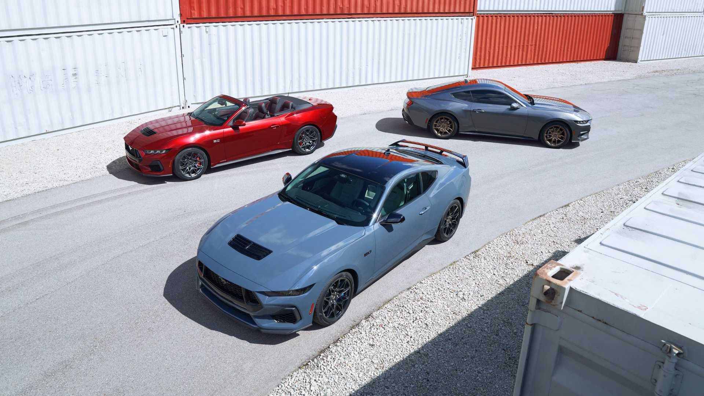

Days
Hours
Minutes
Seconds
*Until released to the public
At an event in Detroit last month, (September 14, 2022), Ford showcased the 2024 Mustang, the seventh generation Pony Car, and the best-selling sports coupe on Earth. The new generation Mustang chassis code name is "S650", but this is not a new platform. The new S650 is still using the same platform as the S550 that was deputed in 2014 but with a lot of tweaks that make the new Mustang look and feel different.
While this is the same platform as the S550, the interior and exterior looks completely different. The technology inside the Mustang has changed significantly compared to the older Mustang, while also giving customers more options to customize the vehicle the way they like it. The S650 still keeps the manual transmission, while improving it compared to the older transmission found in the S550. Click here more details